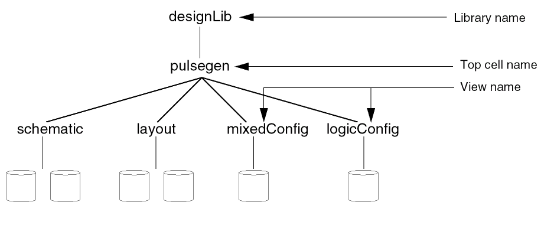

2
Design Hierarchy Configuration View
The configuration view of a design is the definition that the Hierarchy Editor understands and can open. It is a cellview that stores a configuration file that contains the libraries, cells, and views of a design.
- The library directory, which contains a collection of cells that correspond to a specific process technology
- The cell directory, which contains the design object that forms an individual building block of a chip or system
- The view, which is a defined representation of a cell such as layout or a schematic
The main components of a configuration are the top cellview, which is the root of the design and the configuration rules.

In the above example, the designLib library contains two configuration definitions identified by the view names mixedConfig and logicConfig. You can use the Hierarchy Editor to open the mixedConfig or the logicConfig configuration.
Related topics
Opening Configurations in Hierarchy Editor
Return to top